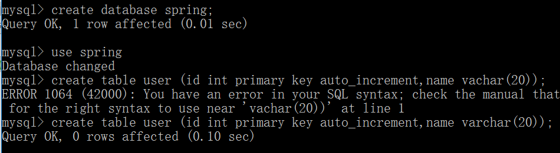

第二十五课. Spring-DataSource-1
从这一节开始，我们将spring与hibernate进行整合。
首先我们需要在配置文件中配置dbcp，也就是database connection pool，连接池。
查阅spring文档：
我们把这个复制到beans.xml中：
然后我们引入我们需要的jar包：
commons-dbcp.jar
commons-pool.jar
以及jdbc的驱动：
mysql-connector-java-5.1.44-bin.jar
在UserDAOImpl中创建dataSource，并且插入一条数据：
然后我们创建一个spring的数据库：

运行，查看数据库：
发现成功将我们的数据插入到数据库中。
第二十六课. Spring-DataSource-2
除了上面的方式，我们可以在Spring中使用PropertyPlaceHolderConfigure来读取Properties文件的内容。
修改beans.xml：
然后在src文件夹下创建一个jdbc.properties文件：
运行，正常。
两种方法都可以的。
第二十七课. Spring-整合Hibernate
为了让Spring支持Hibernate，我们需要引入下面这些jar包：
重写Model，给User加上注解：
重写UserDAOImpl，在里面取得SessionFactory，并且保存一个User：
参考文档，修改beans,xml的配置：
运行：
发现SessionFactory并不是AnnotationSessionFactoryBean，而是org.hibernate.impl.SessionFactoryImpl，我们查看数据库：
由于没有设置名字，所以插入一条NULL，正确。
第二十八课. 使用Annotation进行声明式事务管理
这一次我们的想法是，每次插入一条用户数据的时候，就同时向数据库中插入一条日志记录。
另外，我们这一次不需要自己去写事务相关的逻辑，而是交由Spring帮我们来注入，我们只需要关注于逻辑本身就可以了。
为了达到这个目的，我们需要先在beans.xml中进行声明式事务的配置，在里面加入tx的命名空间：
上面的配置主要加入如下语句：xmlns:tx=http://www.springframework.org/schema/tx
其对应的schemaLocation：
http://www.springframework.org/schema/tx
http://www.springframework.org/schema/tx/spring-tx-2.5.xsd“
以及：
先在Model层创建一个Log的model：
在DAO层创建一个LogDAO：
然后写一个它的实现类：
LogDAOImpl：
注意这一次的实现中，我们没有自己去提交，而是交由spring帮我们提交事务。
那么，一个事务应该是什么样子的？考虑一下，当我们在记录日志的时候，突然出现异常，那么这个时候应该事务回滚，而且插入User这一操作也应该回滚，也就是说，一个事务包括插入User和插入Log两部分，它们一块组成事务。所以我们不应该在DAO层中定义事务，而是应该在Service层中来完成对事务的定义。
UserService：
这一次，我们通过在add方法上加上@Transactional注解，并且在add方法中加入对Log的存库，这样就把插入User和插入Log两个操作合成了一个事务。
运行后查看数据库：
没问题。
如果我们这个时候在UserDAOImpl中抛出一个RuntimeException，那么就会回滚：
运行会报错，而且数据库还和原来一样，没有插入数据。
第二十九课. 使用xml进行声明式事务管理
Transaction propagation有多种取值，默认是Required，这个也是我们常用的，唯一需要记住的。它的示例图如下：
也就是说，如果系统中已经有了一个Transaction，那么我们就不需要再新建一个，只是需要把不同的方法加到这个Transaction就可以了。如果没有，那么我们新建一个Transaction。
下面一个取值是MANDATORY，这个取值是说，我们必须有一个数据库事务，如果没有，那么就报错。
NESTED，如果已经有了一个Transaction，那么我们就停止这个Transaction，在里面嵌入一个Transaction，执行完新的Transaction之后，再继续原来的Transaction。这个叫做内嵌，用的极少极少，了解即可。
NEVER：方法执行，必须不能有事务，有事务就抛异常。
NOT_SUPPORT：如果已经有了一个Transaction，那么我们就停止这个Transaction，新启动一个Transaction，执行完新的Transaction之后，再继续原来的Transaction。这个叫做内嵌，用的极少极少，了解即可。
REQUIRES_NEW：创建一个新的Transaction，如果原先有就给它挂起。
SUPPORTS：支持当前Transaction配置，如果有就有Transaction，如果没有就没有Transaction
上面六种就是事务的传播特性。
NESTED用了事务的保存点，也就是说，在旧事务上创建一个保存点，回滚也回滚到这个保存点。
现在我们讲过了传播事务，我们再来讲一下Transactional的取值：
这是Spring官方文档给出的所有取值，第一个就不需要说了，传播特性，上面主要讲的是这个。
第二个isolation，也就是数据库的隔离级别。
第三个readOnly，表明一个方法内部操作都是只读的，如果有修改插入操作等，会报错。比方我们修改原来的代码：
运行：
抛出异常，警告不能插入。
如果我们新建一个单纯的查询操作的方法，比如一个User的getter方法，那么可以加readOnly=true，因为这样一方面可以防止我们误写了插入操作，另外一方面spring在内部还会帮我们做一些优化。
timeout：如果事务时间太长，就把它抛异常，终止掉，不常见。
rollbackFor：写明在哪些异常情况下回回滚，然后把异常名都写在rollbackFor之后
noRollbackFor：相对应与上面的rollbackFor，这个关键词注明的是哪些异常情况下不会回滚。
上面讲过了annotation情况下声明式事务管理，下面我们介绍xml形式的。
首先beans.xml中的annotation的配置就可以去掉了：
这一句可以去掉了。
原先UserService里面的Transactional注解也可以去掉了。
我们修改beans.xml如下：
在这个配置中，我们定义我们的切面，在切面上定义我们要加的声明式事务逻辑，并且选择hibernate为我们提供的事务管理器。
第三十课. Spring-Hibernate-packagesToScan-总结
以前我们每写一个model，都需要往配置文件里面加一个，太麻烦，怎么办？
我们看Spring.jar中有一个类叫做org.springframework.orm.hibernate3.annotation.AnnotationSessionFactoryBean
这个类中有一个packagesToScan属性，并且可以设置：
那么我们就可以利用这个属性，要把我们扫描的包加进来就可以了（beans.xml）：
这样，我们每次加入一个model，都只需要加到com.bjsxt.model这个package里面就可以了，不需要再写到beans.xml
AOP总结（关于面试）
介绍一下什么是AOP？
画一个图，一个箭头，用两个竖线截断，两个竖线就是连接点。举个例子，一个方法正在运行，前面加一个日志，后面加一个日志，前面加一个transaction begin，后面加一个transaction commit，这就是AOP。具体实现：如果是interface，那么就拿jdk中的proxy加上InvocationHandler来实现，具体的需要查查；如果不是interface，那么就cglib，也需要回去查查。
AOP主要用在哪些方法：
权限审查、日志、审计等等
项目中怎么用的？
我们在项目中主要是用在声明式事务管理上
第三十一课. HibernateTemplate
下面我们介绍三个话题：
HibernateTemplate（理解这个）、HibernateCallback、HibernateDaoSupport（不重要）介绍
先来本节介绍HibernateTemplate，它用到了一种设计模式，就是Template Method(模板方法)，理解什么是模板，比方一个试卷，问题都一样，只有答案不一样，这是一个模板；比方人生，出生、青年、中年、老年、死亡，具体怎么过，也是由我们自己决定，这也是模板。
我们先来看一下spring里面的HibernateTemplate怎么用。
先来配置一下beans.xml：
原先我们需要在UserDAOImpl中如此设计save方法：
现在这些涉及到事务的操作以及异常处理操作都不再需要我们自己来写，由于这些操作都是固定的，所以我们完全可以交由hibernate的模板来帮我们实现，我们只需要来写我们自己的逻辑就可以了。所以精简以后的代码如下：
这样就极大的简化了操作。
具体hibernate是怎么实现这个模板呢？
我们可以来看一下源码
（spring.jar!/org/springframework/orm/hibernate3/HibernateTemplate.class）：
这里用到了一个callback函数，也就是回调函数。
我们来自己写一个函数来模拟这个过程：
先定一一个接口，里面封装了我们自己要定义的回调过程：
然后我们去实现模板并调用回调函数：
可以看到，我们只需要调用模板的save方法，就可以自动帮我们生成事务以及异常处理的相关代码。这就是模板设计模式。
Callback：回调，钩子函数
就是我们在顺序执行模板的时候，突然在某一个地方是需要我们自己去实现的，这个地方就需要调用一个我们自己定义的函数，他就是回调函数，也叫做钩子函数。
第三十二课. HibernateDaoSupport
第一种：（建议）
- 在spring中初始化HibernateTemplate，注入sessionFactory
- DAO里注入HibernateTemplate
- save写getHibernateTemplate.save();
第二种：
- 从HibernateDaoSupport继承
- 必须写在xml文件中，无法使用Annotation，因为set方法在父类中，而且是final的
我们基本不用第二种方法，这里只要用第一种方法。
设想这样一个场景，就是我们的LogDAOImpl需要HibernateTemplate，UserDAOImpl也需要，那么按照上一节提供的方法，每一个bean都需要配置注入sessionFactory，如下：
有没有办法将这些都抽象到一个父类，我们继承就可以默认来注入呢？
先写一个SuperDAO：
这样里面就已经注入了HibernateTemplate，然后我们需要在beans.xml中进行注入：
由于我们的SuperDAO中已经有了HibernateTemplate，所以Spring会帮我们来向这个HibernateTemplate中注入sessionFactory，接下来我们只需要继承这个类，就可以使用HibernateTemplate了：
运行一下，成功。
第三十四课. Spring-Hibernate-HibernateDaoSupport-3
这一节我们讲解HibernateDaoSupport：
修改SuperDAO：
为了使用注解，我们还是在SuperDAO中调用了其父类的setHibernateTemplate方法。
然后我们在beans.xml中配置：
这样就可以将sessionfactory注入到我们的SuperDAO中了，并且从这个类继承实现的DAO都可以拥有HibernateTemplate（set注入）和sessionfactory了。